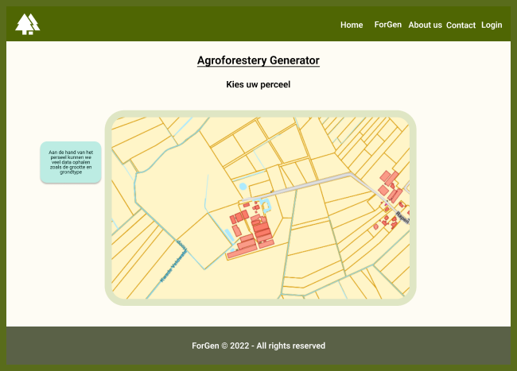
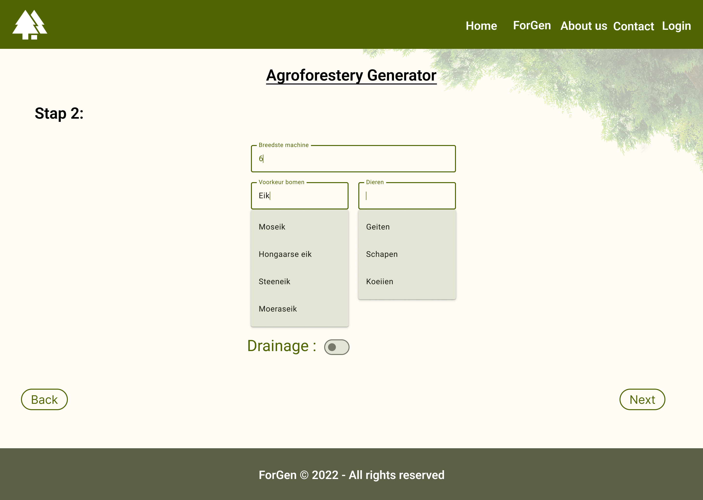
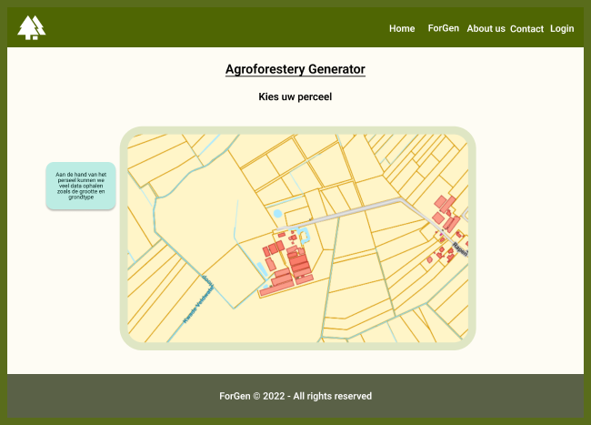
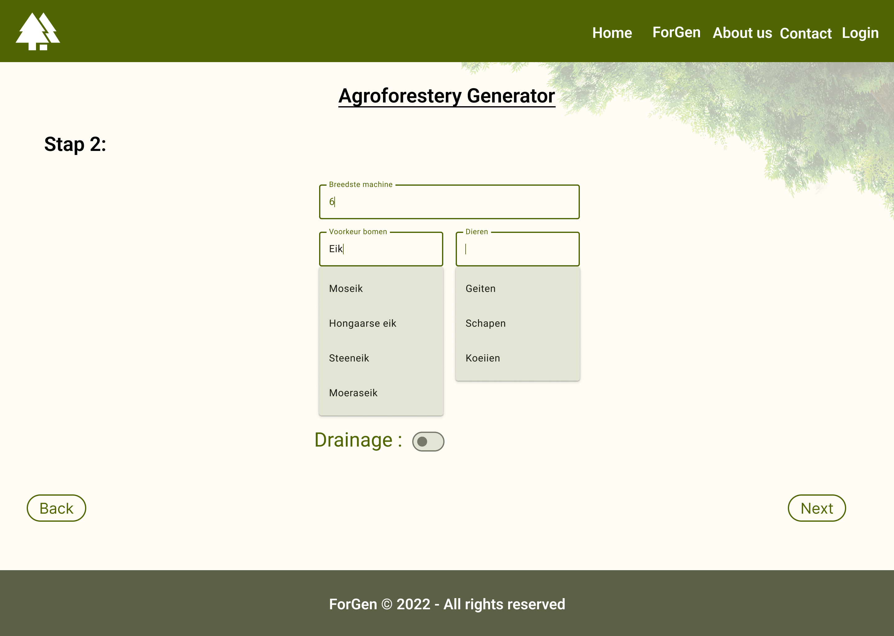

Product
Een hadige tool waarme je in enkele klikken een kan weten of je akker geschikt is om aan agroforestry te doen.
Vul via onze tool enkele gegevens in zoals hoe breed je machines zijn en zie binnen no time resultaat.
 Probeer het hier.
Agroforestry of boslandbouw is een landbouwsysteem waar bomen of struiken gecombineerd worden met een landbouwgewas of landbouwdieren op eenzelfde perceel.

Bij een goed werkend agroforestrysysteem hebben beide componenten een neutrale of positieve invloed op elkaar, en worden negatieve interacties zoveel mogelijk vermeden door een weldoordacht ontwerp.

Agroforestry kan daarnaast ook ecosysteemdiensten leveren zoals koolstofopslag, schaduw voor vee of luchtzuivering.

Ben je benieuwd wat agroforestry nog meer is neem dan een kijkje op op onze site. Als je wilt weten welke stappen je moet ondernemen om aan agroforestry te doen bieden we ook een handige tool aan.
Een hadige tool waarme je in enkele klikken een kan weten of je akker geschikt is om aan agroforestry te doen.
Vul via onze tool enkele gegevens in zoals hoe breed je machines zijn en zie binnen no time resultaat.
 Probeer het hier.